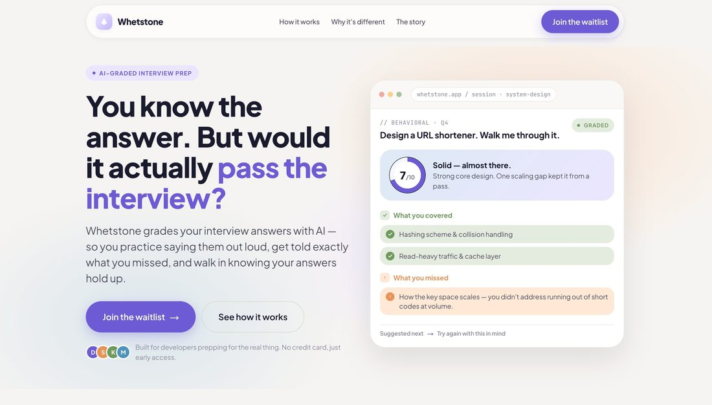

I build where ideas become product.
The gap between “we have an idea” and “users can actually use this.” I find the missing decisions, shape the flow, and build the interface — with the frontend depth to keep it maintainable.
Let's talk ↗Not a designer who codes. Not a developer who avoids product.
I'm a frontend engineer who came up through graphic design, so I notice the things that make a product feel clear and trustworthy — hierarchy, rhythm, the empty state nobody designed, the error message that reads like an apology.
But I've also spent six years in production: complex state, APIs, legacy code, refactors, testing, conversion, frontend architecture. I'm practical. I don't ship beautiful theory that nobody can maintain.
I'm useful when things are still undefined — early products, AI tools, SaaS, dashboards, internal tools, e-commerce flows — and someone needs to bring order without slowing everyone down.
A rough idea carries a pile of unanswered questions. I answer them, then build.
Questions I ask before I write code.
This is the part a junior — or an AI-generated solution — skips. It's also the part that decides whether the product is any good.
production software
& agencies
(checkout refactor)
design (UBA)
Whetstone — my own product.
An AI-graded interview trainer I'm building solo, to senior standards. Two pieces: the app, in active development, and the live waitlist that validates it. Both open on GitHub — click through.
Whetstone — the app
You write your answer to an interview question from memory, an AI grades it against a reference, and you see what you covered, missed, and should fix — progress mapped across topics as you practice.
Built to senior standards
- ›Multi-tenant security at the DB layer. Postgres Row-Level Security — 28 policies across 7 tables — not app-level filtering. Verified adversarially.
- ›Decisions documented. 12 Architecture Decision Records explain the why (Drizzle over Prisma, RLS over app filtering, no RAG in the MVP…).
- ›AI grading layer (in progress). Server-side Claude API with structured outputs, output repair, and an eval set to catch regressions.
Whetstone — the waitlist
A conversion-focused landing + waitlist, built to validate demand before building more — and to show product thinking end to end, from hypothesis to measurement.
- ›Product thinking, not just execution. A stated hypothesis, one narrowed audience, one conversion goal, a measurement plan — the qualifying question doubles as the validation instrument.
- ›Proportional security. Server-side validation, honeypot, in-memory rate limiting — and a documented call to skip CAPTCHA and Redis as over-engineering.
- ›Server-side form handling. Airtable token stays server-side; mobile-first, accessible, with a generated OG image and a clean console.

Where I've shipped — and the calls I made.
Production work for US startups and agencies. It's their software, so there's nothing to link — but here's the situation I walked into and what I drove.
Ask me anything. I built this to answer honestly.
Ask Agustina
grounded in real experienceIt uses an LLM, scoped tightly to what I'd actually say. I don't trust AI blindly — so it's grounded, honest about gaps, and points you to email when it matters.